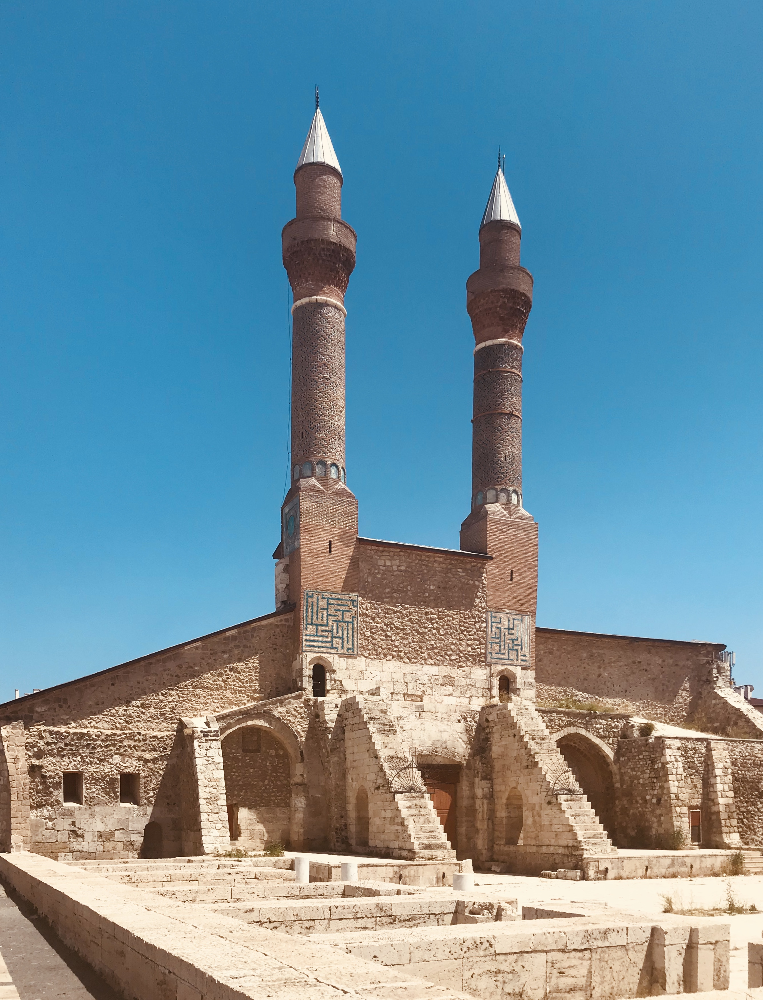
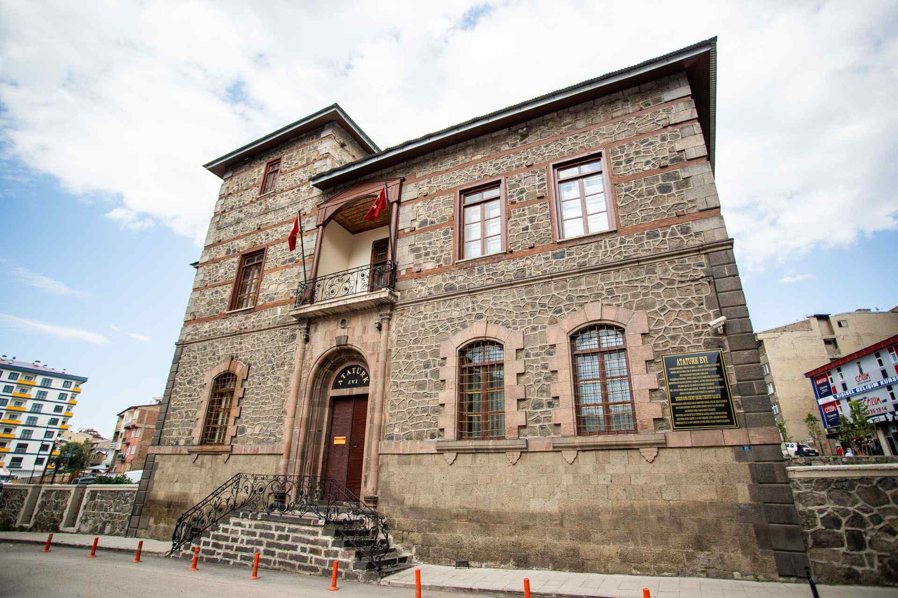

Erzurum
Dadaş ruhuyla buzları eriten Erzurum, tarihin ve karın şehri.

Erzurum ili, Türkiye'deki en eski yerleşim yerlerinden biridir ve camileri ile tanınır.
Erzurum'de bulunan zeytinyağlı yemekleri yapısı, turistlerin ilgisini çeker.
Erzurum'da her yıl düzenlenen camileri festivali, şehre renk katmaktadır.

Çifte Minareli Medrese
Selçuklu döneminden kalma önemli bir medrese.

Atatürk Evi
Mustafa Kemal Atatürk'ün Erzurum'da kaldığı tarihi ev.

Erzurum Müzesi
Bölgenin arkeolojik ve etnografik eserlerini sergileyen müze.